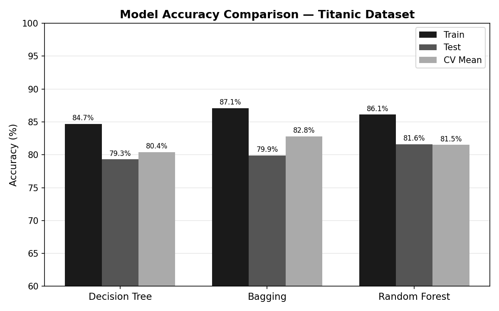
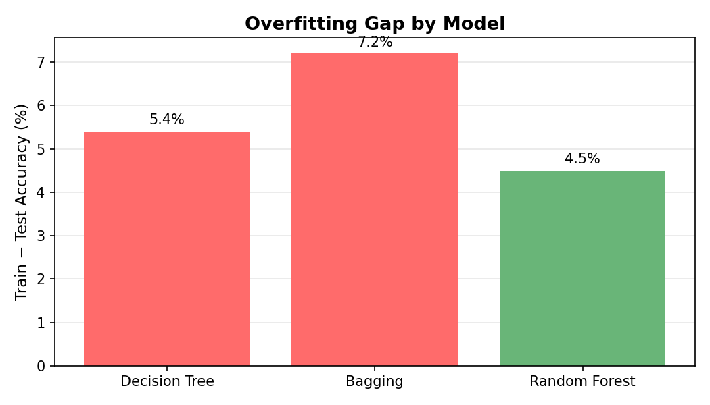
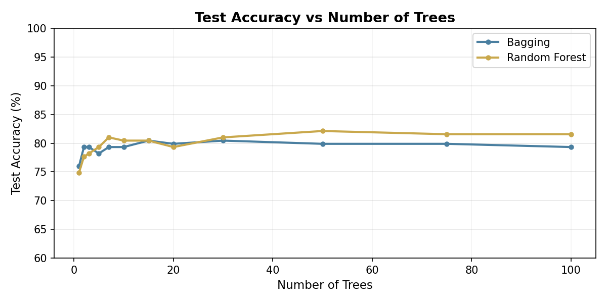
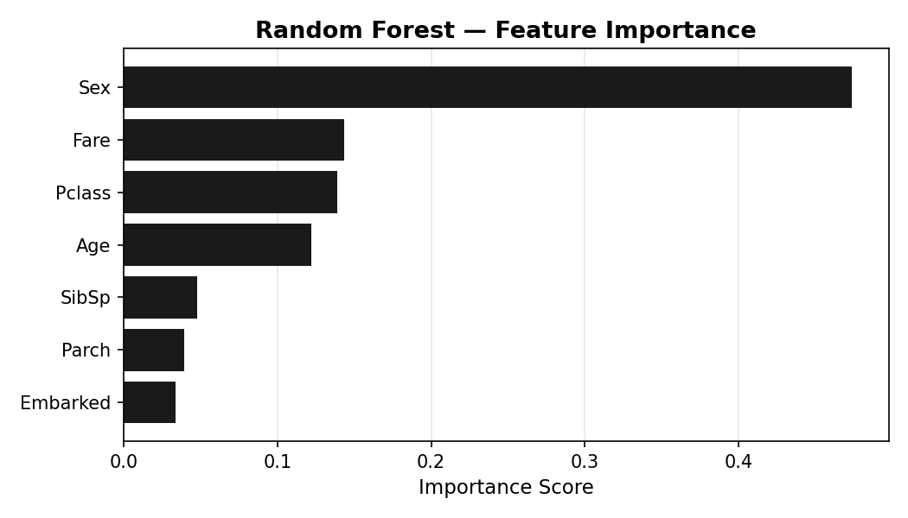

A study of three supervised learning algorithms applied to the Titanic survival dataset, examining how ensemble methods reduce overfitting and improve prediction accuracy on real data.
Given passenger attributes, can a model reliably predict who survived the 1912 Titanic disaster? For each passenger the model outputs 1 (survived) or 0 (did not survive).
The core challenge is learning genuine patterns rather than memorizing training examples. A model that overfits scores well on training data but fails on new passengers. Ensemble methods are designed to fix exactly that.
Classification problems appear across every domain an officer works in. Knowing when to use an interpretable single tree versus a robust ensemble matters in any environment where a wrong prediction has real consequences. Ensemble methods aggregate many imperfect models and let their disagreements cancel out, a direct application of making better decisions under incomplete information.
This manifests in three critical areas. First, predictive maintenance: fleet readiness depends on anticipating equipment failure before it occurs. Random forests trained on sensor telemetry can predict vehicle and aircraft inspection priorities, reducing unplanned downtime. Second, medical triage: combat casualty care requires rapid prioritization with limited personnel. Ensemble classifiers trained on vital signs and injury data assist medics with consistent decisions, regardless of fatigue. Third, personnel readiness: predicting soldier readiness and attrition risk from training performance allows commanders to intervene early. Decision trees are particularly valuable here because their logic can be audited and explained to leadership.
The Kaggle Titanic dataset contains passenger records from the disaster with known survival outcomes. Seven features were used as inputs: passenger class, sex, age, siblings/spouses aboard, parents/children aboard, ticket fare, and embarkation port.
Three models were trained using Python's scikit-learn library: a single Decision Tree (max_depth=5), a Bagging Classifier (n_estimators=100, max_depth=5), and a Random Forest (n_estimators=100, max_depth=5). All three used the same 80/20 train-test split with random_state=42 for reproducibility. Missing numerical values such as Age were imputed with the median of the known values; categorical variables (Sex, Embarked) were label-encoded, converting text categories into integers so the models could process them. Performance was measured by test accuracy on the held-out test set.
Each model builds on the limitations of the previous one. The results below come from training and evaluating all three on the Titanic dataset using identical preprocessing and splits.
A single model that learns to split data by asking yes or no questions at each node. It picks the feature and threshold that best separates the classes at each step. Fast to train and easy to visualize, but it tends to memorize training data rather than learn general patterns.
G = 0 is a perfectly pure node. Every split picks the threshold that minimizes the weighted Gini of the two children.
Bootstrap Aggregating trains many separate trees, each on a different random sample of the training data drawn with replacement. Final predictions come from a majority vote or average across all trees. Every tree still has access to all features at every split.
ρ is the pairwise correlation between trees. The ρσ2 term is a hard floor. Adding more trees never removes it. Only reducing ρ does. That is exactly what random forests target.
Like bagging but with one critical addition. At each node split, only a random subset of features is considered rather than all of them. This prevents any single strong feature from dominating every tree, making the trees genuinely different from each other and the ensemble far more powerful.
Forcing each split to consider only m features stops dominant features from appearing in every tree. Cutting ρ from 0.76 to 0.67 reduces the irreducible variance floor. No number of bagging trees can match this.
Both bagging and random forests build many trees on bootstrap samples of the data. The key difference is that random forests restrict each split to a random subset of features, typically the square root of the total feature count.
This forces trees to rely on different signals. When trees are genuinely diverse, averaging their predictions cancels out more errors and produces a stronger model.
All three models use max_depth=5. Random Forest achieves the highest test accuracy at 81.6%, beating the single Decision Tree (79.3%) and Bagging (79.9%). The gap between train and test bars shows how much each model overfits.

The train−test accuracy gap measures how much each model memorizes vs. generalizes. Decision Tree: 5.4 pp. Bagging actually widens it to 7.2 pp because its highly correlated trees all overfit in the same direction. Random Forest closes it back down to 4.5 pp by decorrelating the trees, giving it the tightest gap of the three.

Both methods improve quickly, then flatten out. The reason is mathematical: the variance of a B-tree ensemble is Var = ρσ² + (1−ρ)σ²/B. The second term shrinks as you add trees, but the first term, ρσ², is a hard floor that no number of trees can remove. At 10,000 trees the second term is essentially zero, but accuracy still cannot exceed the ceiling set by that floor. The only way past it is to lower ρ, the correlation between trees. That is exactly what Random Forest does: by forcing each split to see only a random subset of features, its trees disagree more often, ρ drops, and the floor is lower. Bagging never reduces ρ because every tree can use every feature, so it levels off below Random Forest. A Decision Tree is a single tree by definition and is not shown.

Sex is by far the strongest predictor of survival, consistent with historical accounts of "women and children first." Passenger class and fare, both proxies for socioeconomic status, rank second and third. Age contributes meaningfully; port of embarkation contributes very little.

On this dataset, all three models achieve similar test accuracy, within 2.3 percentage points of each other. This is expected: the Titanic dataset is small (891 records) and relatively clean, so the advantage of ensemble methods is modest but real.
The more telling number is the overfitting gap. The Decision Tree's training accuracy (84.7%) is 5.4 points above its test accuracy (79.3%). Random Forest closes that gap: 86.1% train, 81.6% test, just 4.5 points. Ensemble diversity is working, even at this scale.
On larger, noisier datasets the gap between methods widens significantly. Random forests are typically the stronger default choice when interpretability is not required.
From domain registration to a live research site, built entirely through Claude Enterprise with no local development environment. Every commit pushed to GitHub deploys automatically to dennis-pezan.com.
Purchased dennis-pezan.com through IONOS and configured a professional email through Zoho.
Obtained Claude Enterprise access, which includes Claude Code. No local IDE, no local files, no server configuration.
All pages built through Claude Code. The ML analysis (Kaggle data, Python, scikit-learn, matplotlib charts) was scripted the same way and embedded directly as PNGs.
Two repos: JettDrums/Landing-Page and JettDrums/MA289. Claude Code commits and pushes directly, nothing stored locally.
Both repos connected to Vercel. Every push triggers an automatic deploy and changes go live at dennis-pezan.com in seconds.